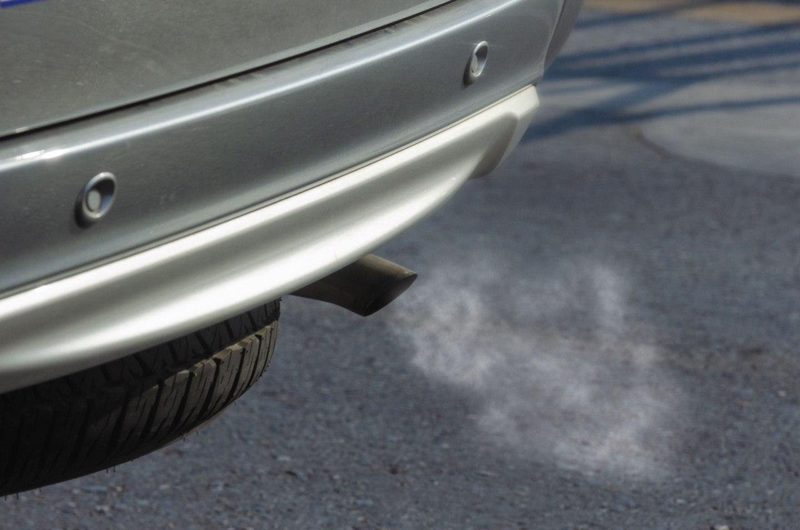

Home / Diagnostics
Exhaust Smoke Colors: White, Blue, Black and Gray Explained
Quick answer
Thin white vapour on a cold morning is normal condensation. Thick white smoke with a sweet smell can mean coolant is burning, blue or gray smoke usually means oil is burning, and black smoke means the engine is running too rich. Persistent colored smoke is a sign to have the car checked.

Exhaust smoke color guide
| Color | Most likely cause | Urgency |
|---|---|---|
| Thin white vapour that fades quickly | Condensation, especially when cold | Normal |
| Thick white smoke, sweet smell | Coolant burning, possible head gasket or crack | High |
| Blue or blue-gray | Oil burning (valve seals, rings, turbo) | Medium to high |
| Black | Too much fuel or too little air | Medium |
| Gray | Oil, transmission fluid or a failing DPF or turbo | Medium |
White smoke
On a cold day, a short-lived puff of thin white vapour is simply water vapour from the exhaust. It should vanish as the engine warms up. Thick white smoke that continues, smells sweet and comes with a falling coolant level is different. It suggests coolant is entering the combustion chamber. Other signs are overheating, bubbling in the expansion tank and milky oil. See Car Overheating: Causes and What to Do and How to Check Coolant Level.
Blue or gray smoke
Blue smoke usually means oil is getting into the cylinders and burning. Causes include worn valve seals, worn piston rings or a failing turbocharger. It's often most noticeable when starting up or when you accelerate after coasting. Check the oil level regularly with How to Read an Oil Dipstick. If you're topping up frequently, get the engine looked at. Using the correct oil and servicing on time also helps; see How Often Should You Change Your Engine Oil?
Black smoke
Black smoke means there's more fuel than the engine can burn. On gasoline cars it can be caused by a faulty sensor, a leaking injector or a clogged air filter. On diesels, a dirty filter, a faulty injector or a boost leak are common. Start by checking the engine air filter and reading the codes. See Check Engine Light: Flashing vs Steady.
What to do if you see smoke
- Note the color, when it happens (cold start, acceleration, idle) and how long it lasts.
- Check the coolant and oil levels when the engine is cool.
- Look for warning lights, a rough idle or a loss of power. See Rough Idle: Causes and What to Check First.
- Stop driving if the temperature rises or the oil light comes on.
- Get a diagnosis rather than adding additives.
Safety note. Never open the coolant cap on a hot engine. If the smoke is heavy and the engine is overheating, switch off safely and call for help.
FAQ
Is white smoke from the exhaust normal?
Thin white vapour that disappears quickly, especially in cold weather, is normal. Thick, lasting white smoke isn't.
What does blue smoke mean?
Usually burning oil. Have the engine checked, and monitor the oil level.
Why is my diesel blowing black smoke?
Often too much fuel or too little air, such as a dirty filter, a boost leak or an injector fault.
Can I drive with smoke coming from the exhaust?
If it's light and brief, perhaps, but persistent or heavy smoke, overheating or warning lights means stop and get help.
Does exhaust smoke affect an inspection?
It can, since smoke often indicates emissions problems.
This guide is general information, not professional advice. Check your own vehicle's manual for exact specs and read the disclaimer before starting any job.